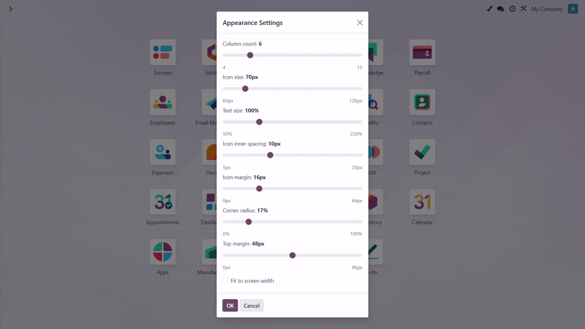

The Home Screen Icon Layout module empowers users to take control of their Odoo interface. Whether you want a dense grid for productivity or large, spaced-out icons for better visibility on touch screens, this module allows you to customize every aspect of the app drawer. Settings are applied in real-time, letting you see the results instantly before saving.
Once installed, a new Paintbrush Icon appears in the systray (top right menu bar).
Clicking this icon opens the Appearance Settings modal where you can adjust sliders and see changes instantly.
Made a mistake? Easily undo your last change with a single click.
See exactly how your home screen will look as you drag the sliders.
You can always reset specific settings or everything back to Odoo's defaults.
Make Odoo truly yours with a layout that fits your workflow.